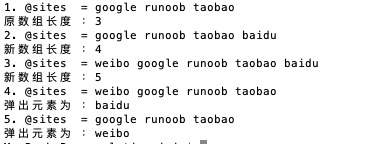

Perl Array
Un array de Perl es una variable de lista que almacena valores escalares, y las variables pueden ser de diferentes tipos.
Las variables de array comienzan con @. Para acceder a los elementos de un array se usa$ + nombre de la variable + [índice]el formato para leer, como en el siguiente ejemplo:
Ejemplo
En el programa, el signo $ se escapó con \ para que se muestre tal cual.
Al ejecutar el programa anterior, el resultado es:
$hits[0] = 25 $hits[1] = 30 $hits[2] = 40 $names[0] = google $names[1] = runoob $names[2] = taobao
Crear arrays
Las variables de array comienzan con@el símbolo, los elementos se colocan entre paréntesis, también se puede empezar conqwpara definir un array.
@array = (1, 2, 'Hello'); @array = qw/这是 一个 数组/;
El segundo array usaqw//operador, que devuelve una lista de cadenas; los elementos del array están separados por espacios. Por supuesto, también se puede usar varias líneas para definir un array:
@days = qw/google taobao ... runoob/;
También puedes asignar valores a un array por índice, como se muestra a continuación:
$array[0] = 'Monday'; ... $array[6] = 'Sunday';
Acceder a los elementos de un array
Para acceder a los elementos de un array se usa$ + nombre de la variable + [índice]el formato para leer, como en el siguiente ejemplo:
Ejemplo
Al ejecutar el programa anterior, el resultado es:
google taobao runoob runoob
Los índices del array comienzan en 0; es decir, 0 es el primer elemento, 1 es el segundo, y así sucesivamente.
Los números negativos se leen en orden inverso; -1 es el primer elemento, -2 es el segundo elemento.
Secuencias de array
Perl proporciona una forma de array que se puede generar por secuencia, con el formatovalor inicial + .. + valor final, como en el siguiente ejemplo:
Ejemplo
Al ejecutar el programa anterior, el resultado es:
1 2 3 4 5 6 7 8 9 10 10 11 12 13 14 15 16 17 18 19 20 a b c d e f g h i j k l m n o p q r s t u v w x y z
Tamaño del array
El tamaño del array está determinado por el contexto escalar del array:
Ejemplo
Al ejecutar el programa anterior, el resultado es:
数组大小: 3
La longitud del array devuelve el tamaño físico del array, no el número de elementos; podemos ver el siguiente ejemplo:
Ejemplo
Al ejecutar el programa anterior, el resultado es:
数组大小: 51 最大索引: 50
Del resultado se puede ver que el array tiene solo cuatro elementos, pero el tamaño del array es 51.
Agregar y eliminar elementos de un array
Perl proporciona algunas funciones útiles para agregar y eliminar elementos de un array.
Si no tienes experiencia previa en programación, tal vez te preguntes qué es una función; de hecho, lo que usamos antes,printes una función de salida.
La siguiente tabla enumera las funciones de operación más comunes en arrays:
| N.º | Tipo y descripción |
|---|---|
| 1 | push @ARRAY, LIST
Coloca los valores de la lista al final del array |
| 2 | pop @ARRAY
Elimina el último valor del array |
| 3 | shift @ARRAY
Extrae el primer valor del array y lo devuelve. Los índices del array también disminuyen en uno. |
| 4 | unshift @ARRAY, LIST
Coloca la lista al principio del array y devuelve el número de elementos del nuevo array. |
Ejemplo
Al ejecutar el programa anterior, el resultado es:

Rebanar arrays
Podemos rebanar un array y devolver el nuevo array resultante:
Ejemplo
Al ejecutar el programa anterior, el resultado es:
weibo qq facebook
Los índices del array deben especificar valores de índice válidos; pueden ser positivos o negativos, y cada valor de índice se separa con comas.
Si son índices consecutivos, se puede usar..para indicar un rango específico:
Ejemplo
Al ejecutar el programa anterior, el resultado es:
weibo qq facebook
Reemplazar elementos de un array
En Perl, el reemplazo de elementos de un array usa la función splice(), con la siguiente sintaxis:
splice @ARRAY, OFFSET [ , LENGTH [ , LIST ] ]
Descripción de parámetros:
- @ARRAY: el array a modificar.
- OFFSET: la posición inicial.
- LENGTH: el número de elementos a reemplazar.
- LIST: la lista de elementos de reemplazo.
El siguiente ejemplo reemplaza 5 elementos del array a partir del sexto elemento:
Ejemplo
Al ejecutar el programa anterior, el resultado es:
替换前 - 1 2 3 4 5 6 7 8 9 10 11 12 13 14 15 16 17 18 19 20 替换后 - 1 2 3 4 5 21 22 23 24 25 11 12 13 14 15 16 17 18 19 20
Convertir una cadena en un array
En Perl, para convertir una cadena en un array se usa la función split(), con la siguiente sintaxis:
split [ PATTERN [ , EXPR [ , LIMIT ] ] ]
Descripción de parámetros:
- PATTERN: el delimitador, por defecto un espacio.
- EXPR: la cadena especificada.
- LIMIT: si se especifica este parámetro, devuelve el número de elementos del array.
Ejemplo
Al ejecutar el programa anterior, el resultado es:
o com weibo
Convertir un array en una cadena
En Perl, para convertir un array en una cadena se usa la función join(), con la siguiente sintaxis:
join EXPR, LIST
Descripción de parámetros:
- EXPR: el separador.
- LIST: lista o array.
Ejemplo
Al ejecutar el programa anterior, el resultado es:
www-runoob-com google,taobao,runoob,weibo
Ordenar arrays
En Perl, para ordenar arrays se usa la función sort(), con la siguiente sintaxis:
sort [ SUBROUTINE ] LIST
Descripción de parámetros:
- SUBROUTINE: especifica la regla.
- LIST: lista o array.
Ejemplo
Al ejecutar el programa anterior, el resultado es:
排序前: google taobao runoob facebook 排序后: facebook google runoob taobao
Nota: la ordenación del array se basa en los valores numéricos ASCII. Por lo tanto, al ordenar un array, es mejor convertir primero cada elemento a minúsculas y luego ordenar.
Variable especial: $[
La variable especial$[representa el primer índice del array, normalmente es 0; si establecemos$[a 1, entonces el primer índice del array será 1, el segundo 2, y así sucesivamente. Ejemplo:
Ejemplo
Al ejecutar el programa anterior, el resultado es:
网站: google taobao runoob facebook @sites[1]: google @sites[2]: taobao
En general no recomendamos usar la variable especial$[; en las nuevas versiones de Perl, esta variable está obsoleta.
Combinar arrays
Los elementos de un array se separan con comas; también podemos usar comas para combinar arrays, como se muestra a continuación:
Ejemplo
Al ejecutar el programa anterior, el resultado es:
numbers = 1 3 4 5 6
También se pueden incrustar varios arrays dentro de un array y combinarlos en el array principal:
Ejemplo
Ejecute el programa anterior, el resultado de salida es:
numbers = 1 3 5 2 4 6
Seleccionar elementos de una lista
Una lista puede usarse como un array; especificando un valor de índice después de la lista se puede leer el elemento indicado, como se muestra a continuación:
Ejemplo
Ejecute el programa anterior, el resultado de salida es:
var 的值为 = 1
De igual manera, podemos usar en el array..para leer los elementos de un rango especificado:
Ejemplo
Ejecute el programa anterior, el resultado de salida es:
list 的值 = 4 3 2Otras extensiones
zhi_007
149***5322@qq.com
Resumen de la función splice()
1. Reemplazar elementos del array.
Ejemplo:
Resultado:
2. Eliminar.
Ejemplo:
Resultado:
3. Eliminar hasta el final.
Ejemplo:
Resultado:
zhi_007
149***5322@qq.com
tangxuan
yuz***uan_1009@sina.com
Resumen sobre la ordenación de arrays
sortLa función recorre cada par de elementos del array original, colocando el valor de la izquierda en la variable$a, y el valor de la derecha en la variable $b. Luego llama a la función de comparación. Si$ael contenido de debe estar a la izquierda, la función de comparación devuelve1; si$bdebe estar a la izquierda, devuelve-1, si ambos son iguales, devuelve0。
Ordenar según el valor numérico:
my @line=qw /1 2 34 9 12 4 3 8 67 53 1 42 1 17 3 0/; print "sorted numbers: "; foreach my $item(sort {$a <=> $b} @line){ print "$item "; }En el código se usa la<=>función de comparación, que indica ordenar según el tamaño numérico literal; esto es ascendente. Para ordenar de forma descendente, solo hay que intercambiar los escalares$a 和 $bde posición.
Ordenar según el valor ASCII del primer carácter:Cambie la función de comparación en el código anterior por lacmpfunción; esta es también la función de comparación predeterminada de Perl.
tangxuan
yuz***uan_1009@sina.com
johnson
abc***c.com
Explicación ampliada de split
Descripción de parámetros:
Cuando se emplea el parámetro LIMIT, significa que el array se divide en LIMIT elementos, no que se devuelve la cantidad de elementos separados por el delimitador. Por ejemplo:
$str = "a b c d e f"; print ("\$str:$str\n"); @arry = split (' ',$str); $ary_len = @arry; print("\@arry:@arry\n\$ary_len:$ary_len\n"); print("\@arry[4]:@arry[4] \@arry[5]:@arry[5]\n"); @arry2 = split (' ',$str,3); $ary_len2 = @arry2; print("\@arry2:@arry2\n\$ary_len2:$ary_len2\n"); print("\@arry2[0]:@arry2[0]\n\@arry2[1]:@arry2[1]\n\@arry2[2]:@arry2[2]\n");Resultado de salida:
johnson
abc***c.com
风
157***445@qq.com
Además, hay un identificador especial$_, que indica recorrer el array.
Ejemplo:
#!/usr/bin/perl # 定义数组 @sites = qw(google taobao runoob facebook); foreach(@sites){ print $_."\n"; }Ejecute el programa anterior, el resultado de salida es:
风
157***445@qq.com